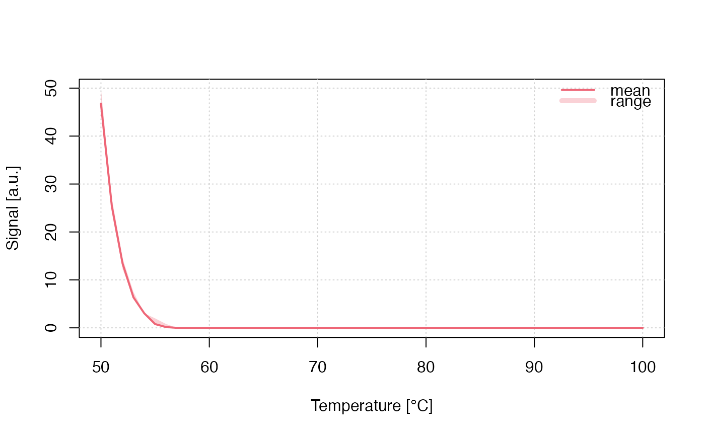

R/run_MC_TL_LOC.R
run_MC_TL_LOC.RdRuns a Monte-Carlo (MC) simulation of thermoluminescence (TL) using the generalized one trap (GOT) model. Localized transitions refer to transitions which do not involve the conduction or valence band. These transitions take place between the ground state and an excited state of the trapped charge, and also involve an energy state of the recombination centre. The heating rate in this function is assumed to be 1 K/s.
run_MC_TL_LOC( s, E, times, b = 1, clusters = 10, n_filled = 100, r, method = "par", output = "signal", ... )
| s | numeric (required): The frequency factor of the trap (s^-1) |
|---|---|
| E | numeric (required): Thermal activation energy of the trap (eV) |
| times | numeric (with default): The sequence of temperature steps within the simulation (s).
The default heating rate is set to 1 K/s. The final temperature is |
| b | numeric (with default): the heating rate in K/s |
| clusters | numeric (with default): The number of created clusters for the MC runs. The input can be the output of create_ClusterSystem. In that case |
| n_filled | integer (with default): The number of filled electron traps at
the beginning of the simulation (dimensionless). Can be a vector of |
| r | numeric (with default): The localized retrapping ratio (dimensionless) |
| method | character (with default): Sequential |
| output | character (with default): output is either the |
| ... | further arguments, such as |
This function returns an object of class RLumCarlo_Model_Output which
is a list consisting of an array with dimension length(times) x clusters
and a numeric time vector.
The model
$$ I_{LOC}(t) = -dn/dt = (s * exp(-E/(k_{B} * T))) * (n^2 / (r + n)) $$
Where in the function:
E := the thermal activation energy (eV)
s := the frequency factor for the trap (s^-1)
t := time (s)
\(k_{B}\) := Boltzmann constant (8.617 x 10^-5 eV K^-1)
T := temperature (°C)
n := the instantaneous number of electrons
r := the retrapping ratio for localized transitions
0.1.0
Kreutzer, S., 2020. run_MC_TL_LOC(): Run Monte-Carlo Simulation for TL (localized transitions). Function version 0.1.0. In: Friedrich, J., Kreutzer, S., Pagonis, V., Schmidt, C., 2020. RLumCarlo: Monte-Carlo Methods for Simulating Luminescence Phenomena. R package version 0.1.6. https://CRAN.R-project.org/package=RLumCarlo
Pagonis, V., Friedrich, J., Discher, M., Müller-Kirschbaum, A., Schlosser, V., Kreutzer, S., Chen, R. and Schmidt, C., 2019. Excited state luminescence signals from a random distribution of defects: A new Monte Carlo simulation approach for feldspar. Journal of Luminescence 207, 266–272. doi: 10.1016/j.jlumin.2018.11.024
Sebastian Kreutzer, Geography & Earth Sciences, Aberystwyth University (United Kingdom)
## the short example run_MC_TL_LOC( s = 1e14, E = 0.9, times = 50:100, b = 1, method = "seq", clusters = 30, r = 1) %>% plot_RLumCarlo()if (FALSE) { ## the long (meaningful) example results <- run_MC_TL_LOC( s = 1e14, E = 0.9, times = 50:100, method = "par", clusters = 100, r = 1) ## plot plot_RLumCarlo(results) }